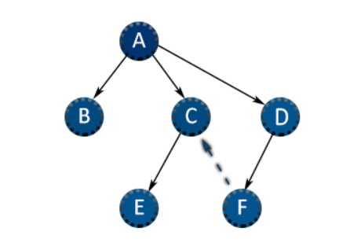
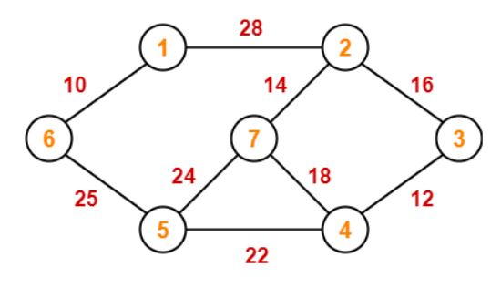

Algorithm for traversing or searching tree or graph data structures.
It starts at the tree root, and explores all of the neighbor nodes at the present depth
prior to moving on to the nodes at the next depth level.

Depth First Search
Algorithm for traversing or searching tree or graph data structures. The algorithm
starts at the root node and explores as far as possible along each branch before backtracking.
Dijkstra's Shortest Path
Algorithm for finding the shortest paths between nodes in a graph, which may represent,
for example, road networks.

Prim's Minimum Cost Spanning Tree
It is a greedy algorithm that finds a minimum
spanning tree for a weighted undirected graph.
Kruskal Minimum Cost Spanning Tree Algorithm
Kruskal's algorithm finds a minimum spanning forest of an undirected edge-weighted graph.